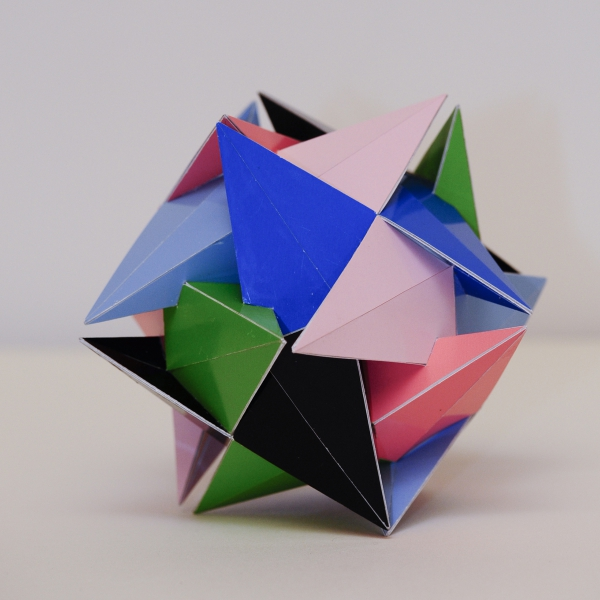

Don't Touch It

Picture copyright by PhotoArt Studio Hörby
This model was built in 2012 and its dimensions is around 9.5 cm x 9.5 cm x 9.5 cm.
This polyhedron only consists of regular heptagons that are folded over a diagonal. There are different ways in which you can fold a regular heptagon and for this polyhedron the folding is done in a 'shell' shape.
he polyhedron only has the rotational symmetries of a cube, i.e. it doesn't have any reflections. I like these kind of symmetries that only have rotational symmetries, and they are often a bit more challenging to build. I decided to build this model, since there are some intersections, but not so many that is becomes chaotic, as is the case for many polyhedra with folded regular heptagons that I found.
A little bit about the name: This polyhedron has some sharp points that should end up close to eachother without touching. You will always get some imprecision and small deviations become noticable easily when these small distances vary a bit: either the distance becomes twice as big or the vertices suddenly touch. Besides that the model was on display at the Bridges Conference in 2013 and it is always good to have a sign that says that you shouldn't touch my paper models.
Note for the model in the 3D player on the right the colours are divided in a slightly different way than for the paper model.
Last Updated
2019-10-15